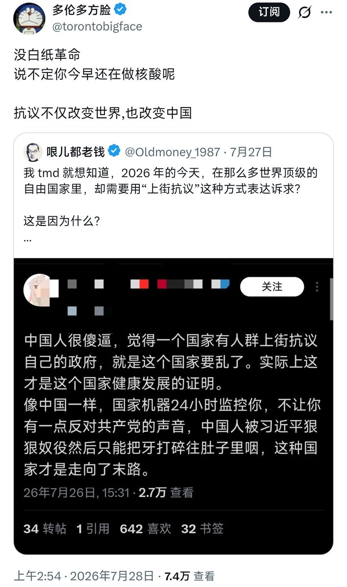

小橘春定（求愛性孤独）
@tatibana_sada
这也是一个很麻烦的问题，那就是抗议本身的作用。亲中洋鬼子经常说，你在中国不能抗议，但是政府会解决问题，在欧美可以抗议但是问题没有解决。
也就是国家能力的问题，王绍光曰：「建立一个强有力的民主国家。」
以前自由派会把抗议本身当成绩效，说能抗议就是好事。2019年后反而被审丑成混乱无序了。

jusir
@bigjusir
没大久保公园
说不定方脸小时候还在饿肚子呢
站街不仅改变了方脸妈，也改变了世界 https://t.co/q5GfOd5nXl